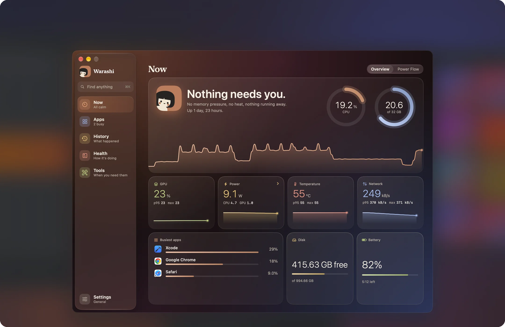

Lo spiritello che si prende cura del tuo Mac.
Warashi osserva il tuo Mac, tiene giovane la batteria e libero il disco, ti dice subito quando qualcosa non va e ti ricorda di riposare. Un'unica app discreta per la barra dei menu invece di undici.
Apple silicon · macOS 26 o successivo · Beta gratuita · Nessun account


Cura · Batteria
Tenuta all'80%.
Invecchia anni più lentamente di una batteria che sta al 100%.
Pulisci · Pulizia
7,2 GB da pulire in sicurezza
Cache delle appBrowserLogSviluppatore
Riposo · Pause
0:15
Distogli lo sguardo dallo schermo.
Controllo
Tutto a posto.
Sapere · Avvisi
 Google Chrome9,8 GB
Google Chrome9,8 GB
La memoria sta finendo. Chiudila, oppure lasciala stare.
Sapere · Cronologia
Perché era lento alle 14:02?
Xcode stava usando gran parte del processore.
Per sviluppatori
$ warashi agents Claude Code working · 62% left Codex done · my-app
Sapere
Conosce il tuo Mac a memoria.
Uno spiritello e un numero nella barra dei menu, due accanto alla tacca e una lettura ogni cinque secondi, conservata per un anno. Quando succede qualcosa, Warashi sa già perché.


Avvisato una volta sola
Un'app fuori controllo, la memoria che scarseggia, il calore, un disco che si riempie.
Una volta per problema, con le prove e una cosa da fare.
Diario di bordo · ieri
- Musica ha tenuto sveglio il Mac per 55 min
- Il tuo Mac è stato lento per 6 min Xcode stava usando gran parte del processore.
- La memoria di Google Chrome cresce in fretta È cresciuta di 1,35 GB nell'ultima ora.
- Caricata al 100%, oltre il tuo limite dell'80%


Cura
Lo mantiene giovane.
Una batteria tenuta all'80% dura anni di più. Un Controllo settimanale scopre i guai prima che ti costino. E quando arriva il momento di un nuovo Mac, Warashi sa esattamente di cosa hai bisogno.


$249
quanto costa in Apple una batteria usurata di un MacBook Pro, fuori garanzia. Una batteria che sta al 100% e al caldo si consuma più in fretta.


Consulente upgrade
Il mio prossimo Mac ha bisogno di 32 GB?
Dopo 30 giorni di uso reale, Warashi ti dice di quanta memoria e spazio ha bisogno il tuo prossimo Mac, e se un chip più veloce servirebbe. Con le prove, non a occhio alla cassa.
Pulisci
Tiene libero il tuo disco.
Scopri cosa riempie il disco, elimina in un colpo solo ciò che si rigenera da solo e rimuovi le app con tutto ciò che hanno lasciato. Tutto finisce nel Cestino, quindi niente va perso per errore.
Pulizia
Tutto ciò che si può eliminare, in base a quanta cautela usare.
- Da pulire in sicurezzaCache di app e browser, log, dati di compilazione di Xcode. Si ricreano da sole.7,2 GB
- Controlla primaVecchi installer, seconde copie dei download, copie degli allegati di Mail.1,4 GB
- Fai attenzioneBackup di iPhone e iPad, che potrebbero essere l'unica copia.38 GB


Disinstallatore
Rimuovi le app come si deve.
Ogni app con ciò che ha lasciato nella tua Libreria, prima quelle che non apri da mesi. Più i residui di app rimosse anni fa.
Mai i tuoi file
Solo nomi, dimensioni e date.
Warashi non apre mai un documento. Accesso completo al disco è facoltativo.
Cestino
Svuotato. Liberati 4,8 GB.
Un promemoria quando il Cestino diventa grande, e il numero vero quando lo svuoti.
Riposo
E si prende cura di te.
Pause gentili per occhi e schiena, uno schermo più calmo quando devi concentrarti e un Mac che resta sveglio esattamente quanto serve al lavoro.


Resta sveglio
Per un'ora, finché il lavoro non è finito, o con il coperchio chiuso.
Per un download, una compilazione o una presentazione.
Le piccole cose
- Velocità di internet e del disco
- Qualità del Wi‑Fi
- Uno schermo nero per pulire
- Nascondi le icone della scrivania
- Silenzia il microfono
- Espelli tutti


Per sviluppatori
Cosa c'è su quella porta? Quanto costa quell'agente?
Claude Code, Codex e Cursor: cosa sta facendo ognuno, quanto resta del tuo limite e un avviso nella tacca quando uno ha bisogno di te. Server di sviluppo per progetto, Docker, modelli di IA locali in memoria e i gigabyte che i tuoi strumenti lasciano indietro.


Il comando warashi
$ warashi explain 14:30 Memory ran short Swap rose from 1.2 GB to 8.6 GB. $ warashi apps --hours 3 Xcode CPU 37m 35s 9.4 GB Safari CPU 26m 22s 6.1 GB
E una connessione MCP facoltativa, in sola lettura, così Claude, Cursor e altre app AI possono rispondere dalla cronologia del tuo Mac. Non si condivide nulla se non la aggiungi.
Un'app tranquilla, dove prima c'era un cassetto pieno.
Per avere tutto ciò che fa Warashi, dovresti installare undici app. Ecco quel cassetto, con i prezzi dal sito di ogni produttore. Niente contro di loro: sono bravi in quell'unica cosa.
- Letture dal vivo nella barra dei menu, con cronologiaiStat Menus 7$11.99una tantum
- Pulizia, disinstallazione, avanzi, scansione malwareCleanMyMac$39.95all'anno
- Una mappa di ciò che riempie il discoDaisyDisk$9.99una tantum
- File duplicatiGemini 2$19.99all'anno
- Limite di carica, carica completa, un programmaAlDente Pro€11.49all'anno
- La salute della batteria nel corso dei mesicoconutBattery Plus€9.95una tantum
- Pause e promemoria per la posturaLookAway$19una tantum
- Sfocatura morbida: tutto tranne la tua finestra, attenuatoHazeOver$4.99una tantum
- Resta sveglio, anche a schermo chiusoAmphetamineGratis
- Limiti di Claude Code, Codex e CursorCodexBarGratis
- Pulizia di Xcode e dei simulatoriDevCleaner for XcodeGratis
- Qualsiasi momento dell'ultimo anno spiegato, e quanto costa ogni app in energiaNessuna app lo vende–
≈ $130il primo anno, poi ≈ $73 ogni anno
Quanto costano tutte e undici insieme, per un Mac. Tre sono abbonamenti, e ognuna ha le sue impostazioni, i suoi aggiornamenti e la sua voce nella barra dei menu.
$0finché Warashi è in beta
Tutto quanto sopra, in un'unica app. Warashi 1.0 sarà un acquisto una tantum. Nessun abbonamento, mai. Cronologia e impostazioni restano.
Prezzi dal sito di ogni produttore o dal Mac App Store a novembre 2026, per un Mac; i prezzi in euro sono convertiti a circa 1,15 $. Variano in base all'area geografica e alle promozioni. Ogni app è quella che sceglieremmo per quella funzione: alcune fanno più di Warashi su quel punto, e Warashi non fa tutto ciò che fanno loro.
0.2%
di un core in background. Niente mentre i tuoi schermi sono in stop.
60MB
di memoria, di solito, con la finestra chiusa. Swift nativo, fatto per Apple silicon.
0 account
Scarica, apri, fatto. La tua cronologia non lascia mai il tuo Mac.
Pensato per la privacy
- Nessun account, nessun cloud, nessuna telemetria sulle tue app o sui tuoi file.
- Nessuna registrazione dello schermo, nessuna battuta di tasto, nessun contenuto dei file, mai.
- Solo statistiche d'uso anonime, dichiarate nel tour di benvenuto. Cosa viene inviato esattamente
Vedilo in due minuti.
Buone domande.
Cos'è un warashi?
Nel folklore giapponese, uno zashiki-warashi è un piccolo spirito della casa. Si dice che la casa in cui vive prosperi. Il nostro vive nella tua barra dei menu e si prende cura del tuo Mac.
Su quali Mac funziona?
Mac con Apple silicon (M1 e successivi) con macOS 26 o più recente.
È gratis?
Gratis durante la beta. Warashi 1.0 sarà un acquisto una tantum, senza abbonamento. Cronologia e impostazioni restano.
Posso tenere AlDente o CleanMyMac?
Puoi, anche se due gestori di carica litigheranno per il limite, quindi tienine uno. Warashi ti avvisa quando ne vede un altro in esecuzione.
Rallenta il mio Mac?
No. Circa lo 0,2% di un core in background e 60 MB di memoria, misurati e mostrati in Impostazioni.
In cosa è diverso da Monitoraggio Attività?
Monitoraggio Attività mostra questo secondo. Warashi ricorda cos'è successo mentre non guardavi, ti avvisa quando conta e si prende cura della batteria, del disco e di te.

Fatto da una persona sola, con cura.
Ciao, sono Adam, uno sviluppatore indipendente. Warashi è un mio progetto personale: l'app, il suo design e questo sito. Voglio che sia il tipo di app per Mac che userei volentieri io: calma, onesta sui suoi numeri e leggera per il tuo Mac. Se hai un'idea, o qualcosa non va, scrivimi.
Adam
Uno spiritello tranquillo
si prende cura del tuo Mac.
Gratis finché Warashi è in beta. Un piccolo download, nessun account, e da stasera il tuo Mac ha qualcuno che si prende cura di lui.